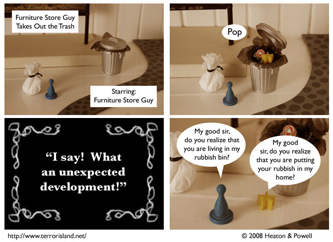

Strip #262
— Wednesday, February 13, 2008
Let’s see the so-called talking webcomics top this one
Notes, Thoughts, &c.
Ben’s Notes
The panels in this strip are all the same size, because it’s more authentic that way.
Lewis’s Notes
Presented above for your amusement and edification is our latest comical foray: “Furniture Store Guy Takes Out the Trash.”
Brought to you in glorious fumettiscope technology, transmitted over the aether straight from our photo-chambers to you. Fumettiscopes: the patent-pending solution to all your cares, sure to make those boys at the ice-cream parlor jump for joy!